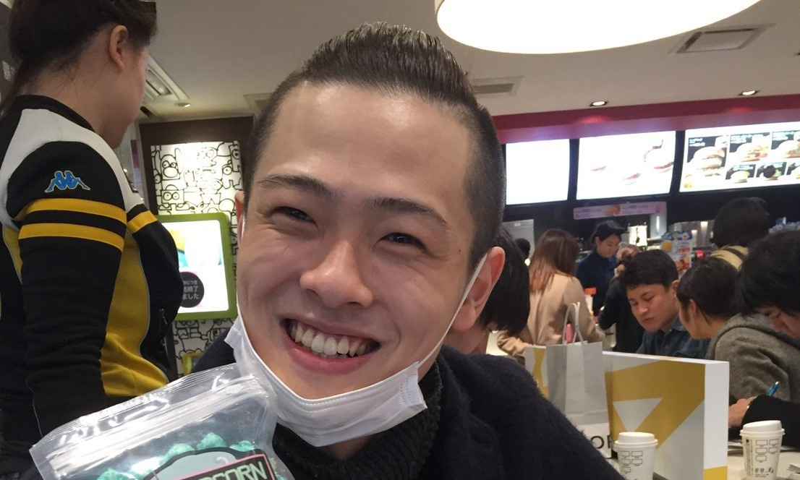
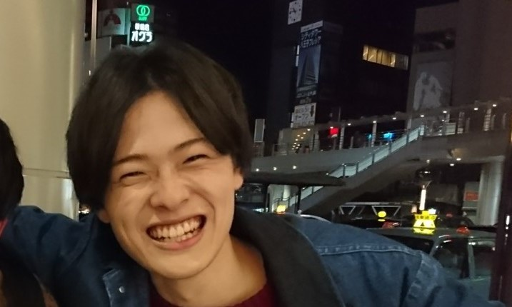
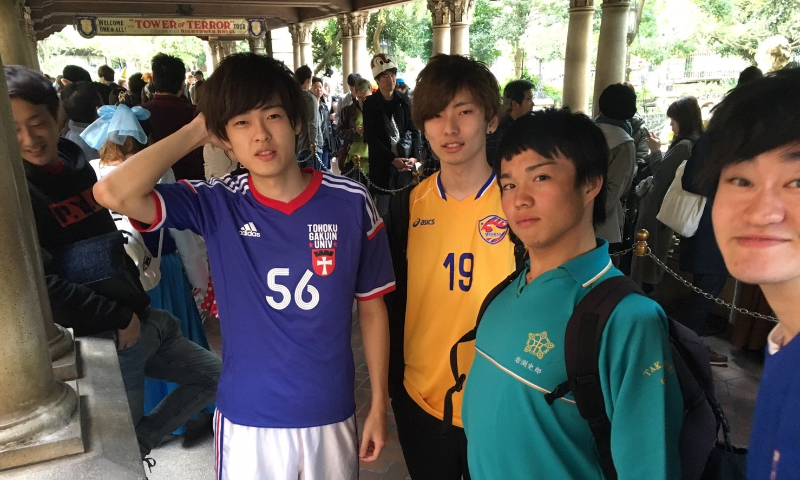
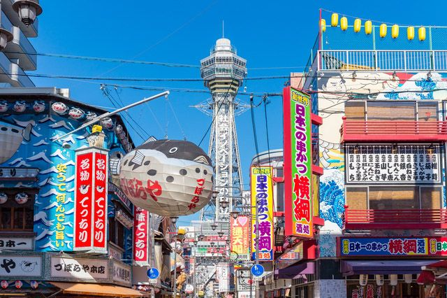

我が社の絶対的エースの軌跡とこれから 〇プロフィール    ・生年月日 1996年11月29日(男) ・住んでる場所 大阪  ・出身地 愛媛→宮城県仙台市(小学校～高校→青春)→東京 ・趣味 ゲーム： ファッション： ・学生時代 中学校は剣道部、高校はハンドボール部からの地学部に所属し、将来はデュエリストでした。 大学は基本的にゲーム、バイト、オ〇ニーのルーティン ・SNS ぜひ個人的にご連絡してください。→